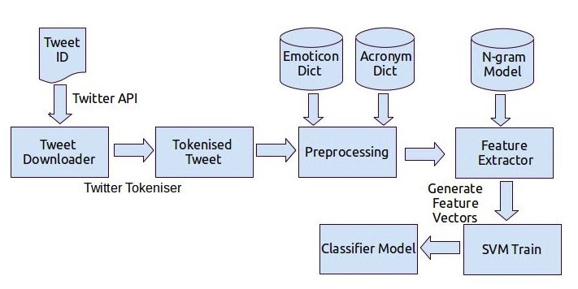

Introduction
Microblogging today has become a very popular communication tool among Internet users. Millions of users share opinions on different aspects of life everyday in popular websites such as Twitter, Tumblr and Facebook. Spurred by this growth, companies and media organisation are increasingly seeking ways to mine these social media for information about what people think abouttheir companies and products. Political parties may be interested to know if people support their program or not. Social organizations may ask people’s opinion on current debates. All this information can be obtained from microblogging services, as their users post their opinions on many aspects of their life regularly. In this work, we present a method which performs 3- class classification of tweet sentiment in Twitter. We present an end to end system which can determine the sentiment of a tweet at two levels- phrase level and message level. We leverage the features of tweets to build the classifier which achieves an accuracy of 68.00%
Data and Resources
In this project we use the dataset provided using Twitter APIs The dataset consists of tweet id’s which are annotated with positive negative and neutral labels.
In this work we use three external resources in order to preprocess the data and provide prior score for some of the commonly used words.
Emoticon Dictionary:
We use the emoticons list as given in [4] and manually annotate them. Table 1 is the snapshot of the dictionary. We categorise the emoticons into four classes: a) Extremely- Positive b) Positive c) Extremely- Negative d) NegativeAcronym Dictionary:
We crawl the website [1] in order to obtain the acronym expansion of the most commonly used acronyms on the web. The acronym dictionary helps in expanding the tweet text and thereby improves the overall sentiment score (dis- cussed later). The acronym dictionary has 5297 entries. For example, asap has translation As soon as possible. Table 2 is the snapshot of the acronym dictionary.-
Wordnet:
Wordnet is a list of English words rated for valence with an integer between minus five (negative) and plus five (positive). The words have been manually labeled by Finn rup Nielsen in 2009- 2011. Table 3 is a snapshot of the Wordnet dictionary.
PREPROCESSING
Tokenisation
After downloading the tweets using the tweet id’s provided in the dataset, we first tokenise the tweets. This is done using the Tweet-NLP developed by ARK Social Media Search. This tool tokenises the tweet and returns the POS tags of the tweet along with the confidence score. It is important to note that this is a twitter specific tagger in the sense it tags the twitter specific entries like Emoticons, Hashtag and Mentions too. After obtaining the tokenised and tagged tweet we moveto the next step of preprocessing.Replacing Emoticons
Emoticons play an important role in determining the sentiment of the tweet. Hence we replace the emoticons by their sentiment polarity by looking up in the Emoticon Dictionary.-
Remove URL
-
Remove Target (@ mentions)
-
Hashtags
-
Sequence of Repeated Characters
-
Stop words and numerical values removal
Approach
Training
testing
EXPERIMENTS AND RESULTS
For each of the classification tasks we present two models,as well as results for the combinations of
these models:
Baseline Model
- Feature Based Model
- Baseline plus Feature Based Model
Classifier | %Accuracy |
Unigram + Bayes Classification function | 50.56 |
Bigram + Bayes Classification function | 54.33 |
Unigram + SVM | 65.87 |
Unigram+ Senti-Feature+SVM | 66.45 |
Unigram+ Senti-Feature+POS polarity+SVM | 68.67 |